Префектура Тояма · Куробэ и Такаока · еда
Комбу в Тояме: почему здесь едят водоросли, которые не растут в префектуре
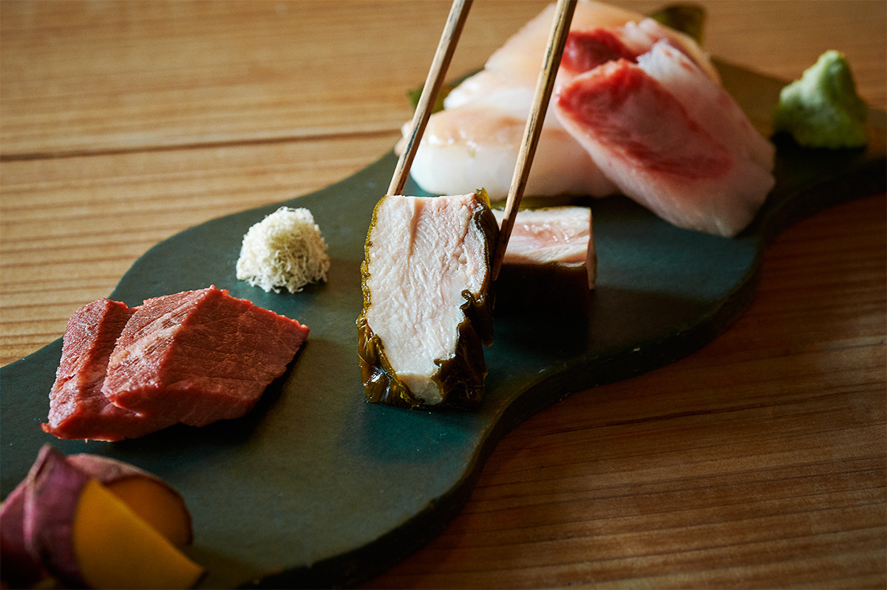
Около 90 процентов японского комбу добывают на Хоккайдо, а в Тояме этих водорослей почти нет. Зато по тому, сколько комбу здесь съедают, префектура в числе первых в стране. Чтобы понять почему, стоит заглянуть в портовый Икудзи и в старый торговый город Такаоку.
Загадка
Комбу, которое здесь не растёт
Икудзи это старый рыбацкий квартал города Куробэ на востоке префектуры Тояма. Дно у берега здесь резко уходит в глубину, и в порт приходит понемногу самой разной рыбы, больше всего белой. В ясный день отсюда видны горы хребта Татэяма.
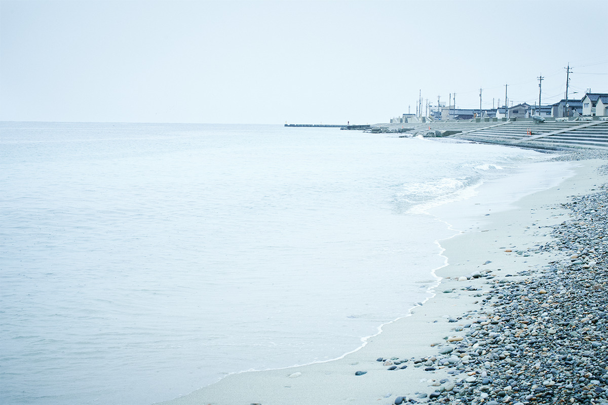
Насколько глубоко комбу вошло в здешнюю кухню, видно уже в «Сакана-но эки Икудзи», рыбной лавке и столовой местного рыболовецкого кооператива у самого порта. Здесь продают камабоко с комбу, рулетики из сельди в комбу, тонкие стружки оборо-комбу, а кобу-дзимэ занимает целый угол. Так называют рыбу, которую выдерживают между листами комбу. Для кобу-дзимэ берут в основном белую рыбу из порта Икудзи: морского леща, камбалу, морского окуня, а ещё белую креветку и кальмара. Комбу используют особое, раскатанное квадратными листами, и покупают его в лавке напротив.
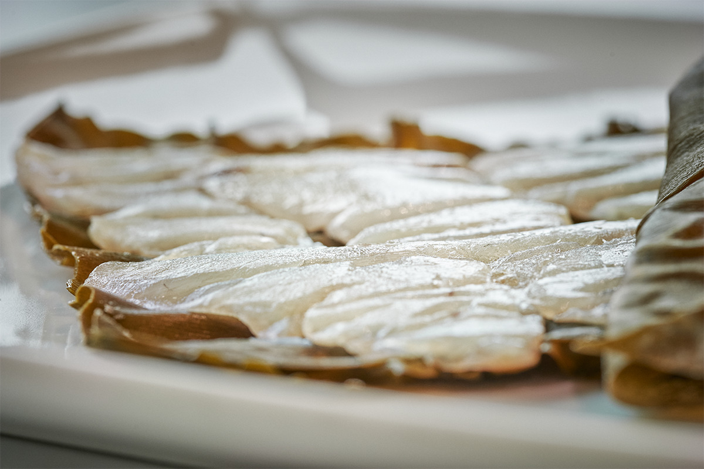
«Сакана-но эки Икудзи»
- Адрес
- префектура Тояма, Куробэ, Икудзи-Накаку, 265
- Телефон
- +81 765-57-0192
- Часы работы
- рыбный магазин и сувениры 9:00–18:00, столовая 11:00–15:00
- Выходные
- среда
- Сайт
- jf-kurobe.jp
История
Дорога комбу
Лавку напротив называют Aimono Konbu. Её открыли в 1949 году как цех по переработке комбу, и возглавляет её уже третье поколение семьи. «Аимоно» это фамилия владельцев, но в Тояме так называются и некоторые места. Старое значение слова «аимоно» это солёная рыба вообще. Такую фамилию брали себе оптовые торговцы морепродуктами, капитаны, владельцы судов и судовые агенты китамаэ-бунэ. Записывают её иероглифами, которые буквально читаются как «сорок» и «вещь», и в бывших портах этих судов фамилий с иероглифом «сорок» особенно много.
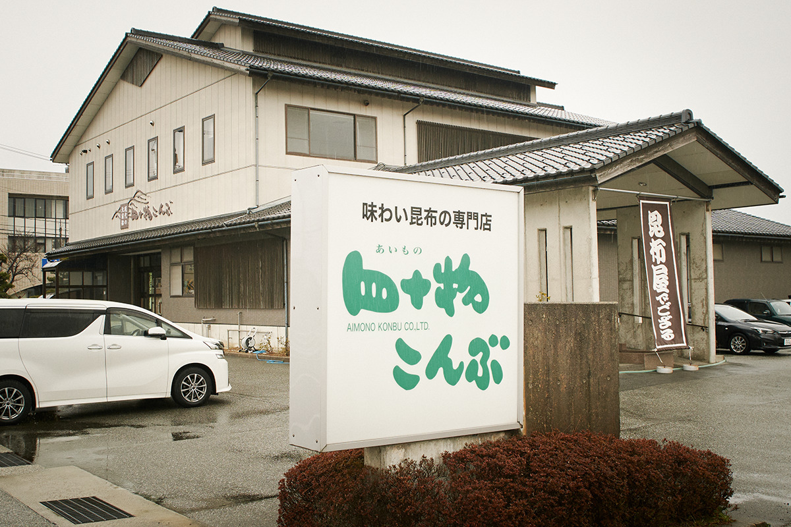
Китамаэ-бунэ это торговые суда, которые с середины периода Эдо до первых лет XX века ходили вдоль побережья Японского моря между Осакой и Хоккайдо. На Хоккайдо они везли рис, соевый соус и циновки, а обратно брали комбу, сельдь и рыбное удобрение и распродавали их во всех портах по пути. В Тояме у них было несколько стоянок, среди них Икудзи, Хигаси-Ивасэ и Фусики, и комбу пошло по префектуре.
Дальше комбу уходило на юг, в Сацуму и на Рюкю, а оттуда в Китай.
«В Китае тогда комбу очень ценили, из него добывали йод. Говорят, возили его туда торговцы лекарствами из Тоямы»
хозяин лавки Aimono Konbu
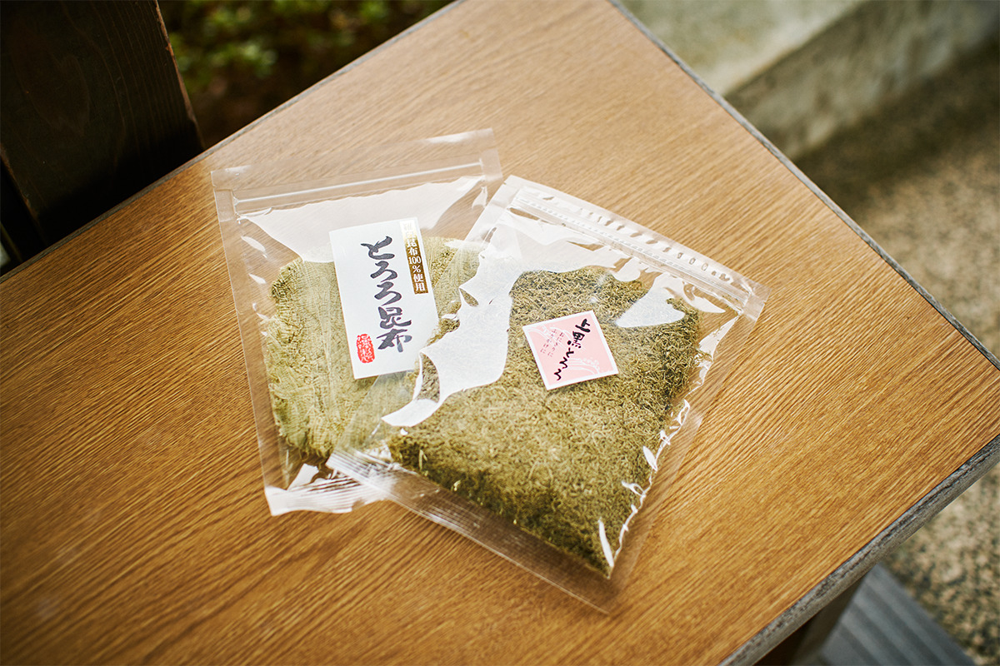
Переселенцы
Как Тояма и Хоккайдо связали комбу
Вторая причина, по словам хозяина, в людях. В эпоху Мэйдзи много жителей Тоямы перебрались на Хоккайдо.
«Если поделить береговую линию Тоямы на всех тогдашних рыбаков, на каждого приходилось совсем немного. Даже при хорошем улове жили трудно. Работы не было, и вторые и третьи сыновья уезжали на заработки на Хоккайдо. Особенно люди с востока префектуры, из Куробэ: они осваивали самые суровые места, самый край острова, Нэмуро, Раусу на полуострове Сирэтоко и даже южные Курилы. Но где суровее, там и рыбы много, и комбу лучше, поэтому многие преуспели»
хозяин лавки Aimono Konbu
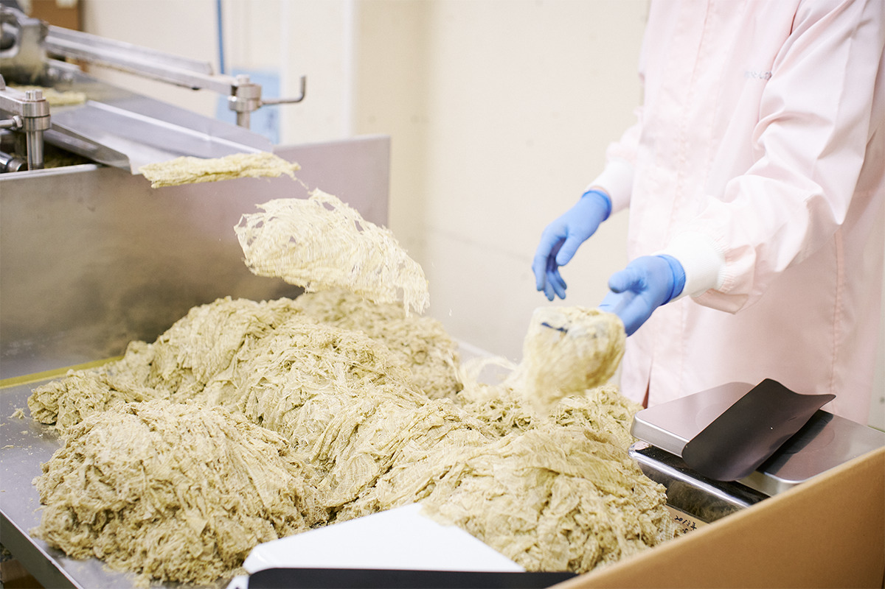
Переселенцы посылали комбу родным, и понемногу водоросли стали обычной едой в Тояме. История самой лавки начинается так же. Прадед хозяина (1898–1972) уехал на остров Рисири у Хоккайдо и держал там рыбный промысел. Его второй сын, дед хозяина (родился в 1927 году), вернулся в Икудзи и стал делать стружку тороро из рисирского комбу. Сначала мастерская была цехом семейной оптовой торговли с Рисири, а в 1973 году получила название Aimono Konbu.
Здесь продают рауское, рисирское, хидакское и другие виды комбу: если делить по местам сбора и сортам, около 100 наименований. Больше всего выбор рауского комбу. Его отправляют и в рестораны японской кухни в Кансае, и большими партиями за границу.
Стол
Комбу, которое едят
Стружку тороро, с которой началась лавка, делают здесь же. В ней только комбу и уксус. Листы прессуют в блок и строгают его слоями толщиной 20 микрон, это 1/50 миллиметра. Цвет и вкус зависят от толщины листов: если строгать край толстого комбу, получается белая стружка, а если тонкий, чёрная. За пределами Тоямы чёрную стружку знают мало, но здесь её любят за свежий, лёгкий вкус.
«Белой стружкой посыпают рис, кладут её к блюдам, в общем, добавляют во всё. А чёрная, когда я был ребёнком, была такой обычной едой, что в школе на обед давали обёрнутые ею рисовые шарики»
хозяин лавки Aimono Konbu
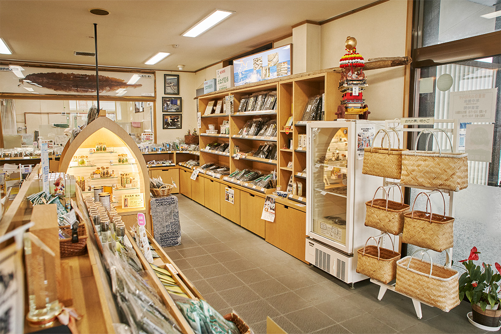
В Тояме комбу не только варят для бульона даси, но и просто едят: в блюдах, как закуску, его даже кладут в сакэ.
«В комбу много калия, он помогает выводить соль. Бульон это хорошо, но лучше есть само комбу. У рауского комбу мягкие волокна, его можно просто нарезать и съесть»
хозяин лавки Aimono Konbu
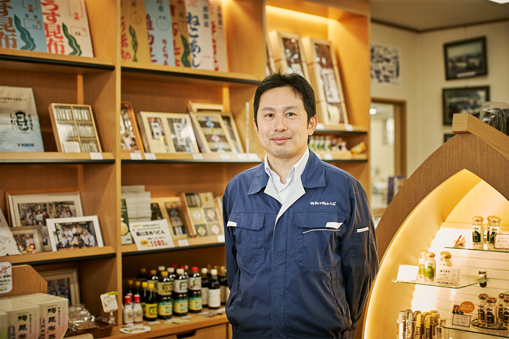
Во время разговора в лавку один за другим заходили местные жители. Многие берут разные сорта для разных блюд, и некоторых сортов нет нигде, кроме этой лавки, поэтому комбу покупают здесь, а не в супермаркете. Землетрясение на полуострове Ното 1 января 2024 года лавку серьёзно не задело: 3 января она уже снова работала.
Aimono Konbu
- Адрес
- префектура Тояма, Куробэ, Икудзи-Накаку, 339-5
- Телефон
- +81 765-57-0321
- Часы работы
- будни 8:00–17:30, воскресенье и праздники 9:00–17:00
- Выходные
- без выходных (кроме 1 января)
- Сайт
- aimono.com
Такаока
CRAFTAN: ресторан одного блюда
Такаока стоит на северо-западе префектуры. Порт Фусики в Такаоке тоже был стоянкой китамаэ-бунэ, и комбу пришло сюда тем же путём. Из этой истории выросло местное блюдо кобу-дзимэ: так сохраняли рыбу, а потом заметили, что с комбу она становится вкуснее, и способ разошёлся по домам. В Такаоке есть ресторан, который готовит только кобу-дзимэ.
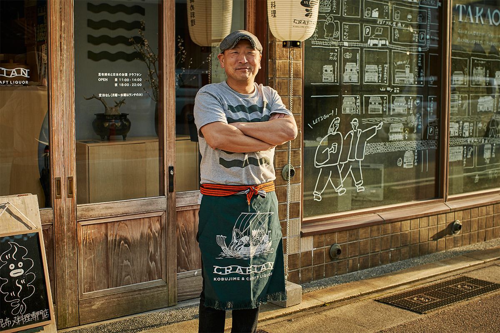
«Кобу-дзимэ часто бывало у нас на столе с детства. Обычно его делают из белой рыбы, а у нас дома иногда из кальмара: получалось вязко и сладко, я это обожал. Ещё делали кобу-дзимэ из горных трав»
владелец CRAFTAN
Основная работа владельца в строительстве, а ресторан появился из желания поднять Такаоку и показать её приезжим.
«Я подумал: почему бы не высветить то, что здесь давно прижилось? Так появилась идея ресторана кобу-дзимэ. И тут на Яматё-судзи собрались снести здание старого магазина канцтоваров. Мы, несколько местных, решили сохранить красивый дом и устроить в нём магазины»
владелец CRAFTAN
Яматё-судзи это улица старых домов-амбаров с толстыми глиняными стенами. Здание бывшего магазина стало комплексом Yamacho Valley, а ресторан занял его старую контору.
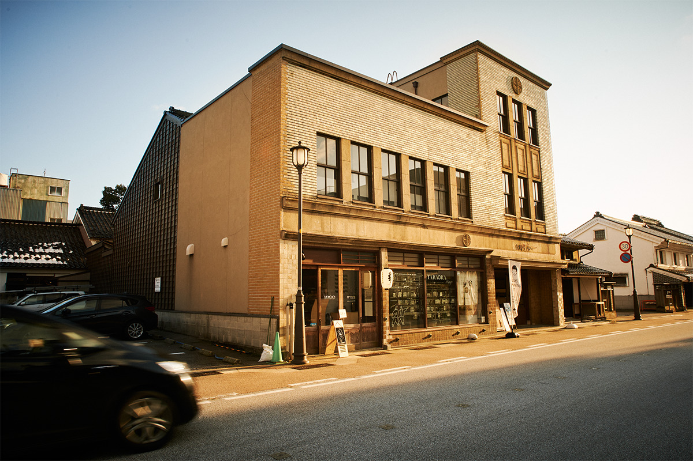
Идея
Новое лицо кобу-дзимэ
«Я верил, что у кобу-дзимэ большой потенциал, и хотел о нём рассказать»
владелец CRAFTAN
Кобу-дзимэ в Тояме едят все, его можно назвать едой души префектуры. Ресторан открылся в 2017 году, и владелец стал искать новые стороны блюда: придумал кобу-дзимэ из мяса и овощей. Первый год дался трудно, о ресторане мало кто знал, а зимой выпал снег, какой бывает раз в десять лет. Весной ресторан заметил один рассказчик ракуго в передаче о прогулках по городам, о нём рассказали по общенациональному телевидению. Постепенно о CRAFTAN узнали в префектуре и за её пределами, и к 2023 году сюда ходили и приезжие, и местные.
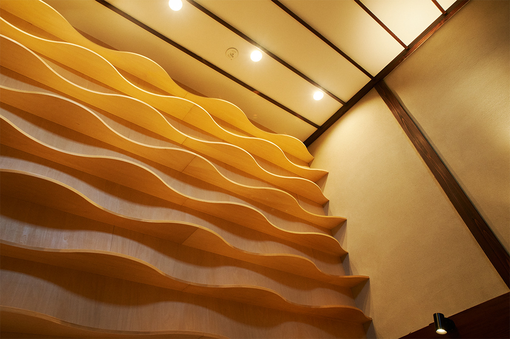
Меню
Рыба, мясо, овощи
Для кобу-дзимэ лучше всего подходит особое комбу, которое выращивают один год на юге Хоккайдо. В него заворачивают и в CRAFTAN: сезонную рыбу из залива Тояма, мясо, овощи, тофу, конняку. Сколько держать продукт в комбу?
«Здесь одни любят лёгкое кобу-дзимэ, полдня, а другие держат его три-четыре дня как следует. Дело вкуса. У нас от полусуток до одной ночи, смотря по продукту»
владелец CRAFTAN
Продукт теряет лишнюю влагу, пропитывается вкусом комбу, у него появляется аромат и тонкая сладость. По словам владельца, инозиновая кислота из рыбы и мяса вместе с глутаминовой кислотой из комбу дают вкус умами в семь раз сильнее. Цифра удивляет, но, попробовав, в неё веришь. Клубнеплоды, корень лотоса, тыква тоже получаются очень сладкими. Их можно есть безо всего, но хорошо подходит и иридзакэ, старинная приправа из умэбоси, сакэ, стружки тунца кацуобуси и комбу, уваренных вместе. Ею пользовались, пока не распространился соевый соус.
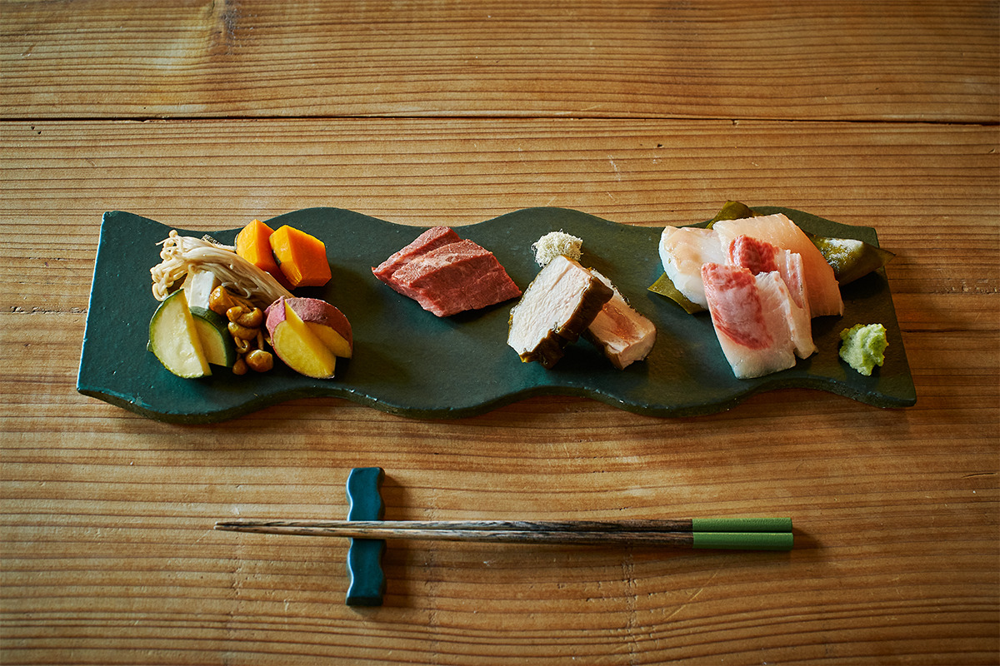
Изобретение
Кобу-дзимэ из бамбуковой пароварки
«Своим большим изобретением я считаю кобу-дзимэ на пару. Обычно его едят комнатной температуры, и так тоже вкусно, но мне было интересно, что будет, если его согреть. Попробовал и увидел, как пар раскрывает вкус и аромат комбу»
владелец CRAFTAN
Стоит поднять крышку пароварки, и вместе с паром поднимается запах комбу и продуктов. Вкус у кобу-дзимэ на пару другой, не такой, как у обычного.
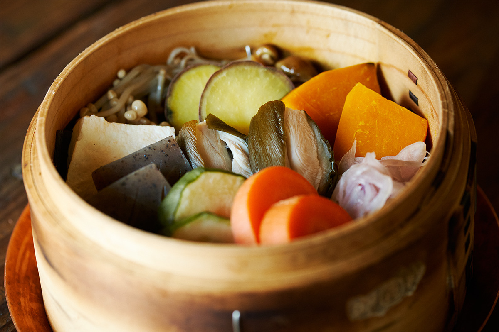
Напитки
Кобу-дзимэ и сакэ Тоямы
Сакэ в CRAFTAN, разумеется, местное, из Тоямы. Виски и сётю тоже сделаны в префектуре или связаны с ней. Крафтовое пиво владелец выбирает на свой вкус, и оно меняется день ото дня. В день съёмки было три сорта пивоварни KOBO Brewery из старого портового квартала Хигаси-Ивасэ в городе Тояма.
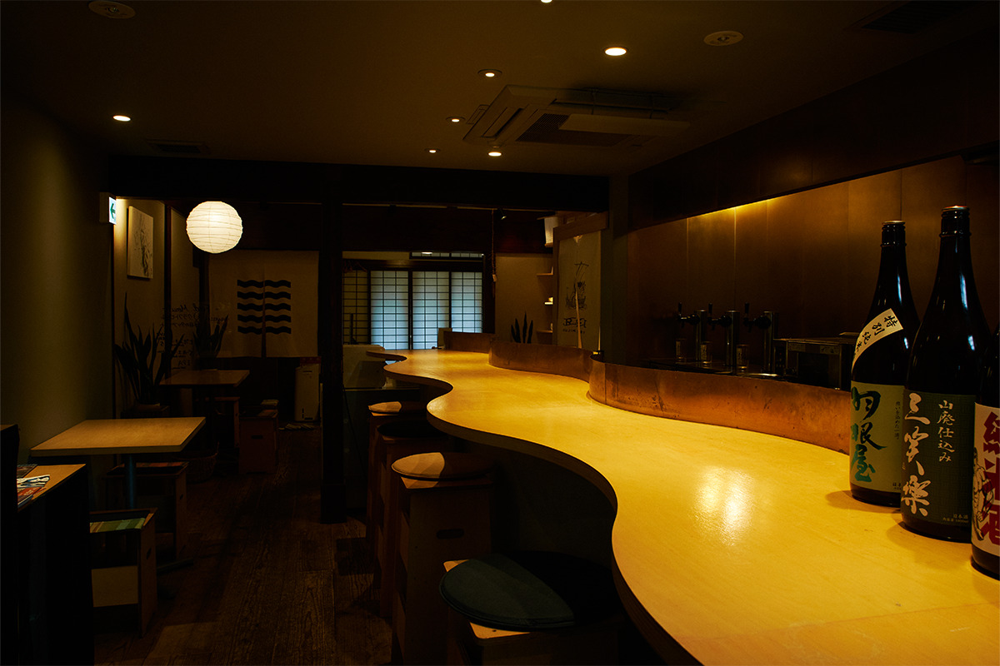
Кобу-дзимэ с глубоким вкусом и разные напитки Тоямы стоят того, чтобы попробовать их вместе.
CRAFTAN
- Адрес
- префектура Тояма, Такаока, Командэ-мати, 6, Yamacho Valley, «Ни-но кура»
- Телефон
- +81 766-75-9013
- Часы работы
- 11:00–14:00, 18:00–22:00, с понедельника по среду только обед
- Выходные
- без выходных
- Сайт
- craftan.jp
Фото: Хидэюки Хаяси.